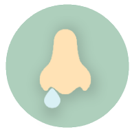
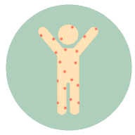

Morada: Av. Dr. Lourenço Peixinho 6 - 2º S/8 Tel: 234371344/5 ou 960467528
Sintomas das Doenças Alérgicas Mais Comuns
Asma Brônquica
Falta de ar
Tosse
Aperto no peito
Sibilos (“chiadeira”)

Rinite Alérgica
Espirros
Irritação e “pingo” no nariz
Comichão nos olhos
Sinusite Alérgica
Obstrução nasal
Dor e pressão em redor dos olhos, nariz ou testa

Urticária
Manchas vermelhas na pele com comichão
Inchaço
Alergia a Alimentos
Urticária
Vómitos
Diarreia
Sensação de desmaio
Choque e perda de consciência
Alergia aos Ácaros do Pó
Obstrução nasal
Olhos lacrimejantes
Espirros
Falta de ar
Outras áreas de especialidade
Na Alerimune ajudamos a preservar a sua saúde
Testes e vacinas
Intolerâncias alimentares (como intolerância à lactose ou ao glúten)
Conjuntivites
Rinoconjuntivites
Bronquite
Alergia insectos
Alergia animais
Alergia a fármacos
Alergia ao latex
Alergias cutâneas
Alergia ao pólen
Prof. Dr. Luís Delgado
Médico especialista em Imunoalergologia, com mais de 40 anos de experiência
Presidente da Sociedade Portuguesa de Alergologia e Imunologia Clínica (SPAIC)
Professor Associado, agregado, na Faculdade de Medicina da Universidade do Porto
International Fellow, American Academy of Allergy, Asthma & Immunology
Distinguido recentemente com o “The Charles Blackley Award” pela EAACI, a maior associação mundial de especialistas e investigadores na área da alergologia e imunologia clínica